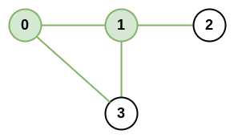

1615. 最大网络秩
题目与约束
n 座城市和一些连接这些城市的道路 roads 共同组成一个基础设施网络。每个 roads[i] = [ai, bi] 都表示在城市 ai 和 bi 之间有一条双向道路。
两座不同城市构成的 城市对 的 网络秩 定义为：与这两座城市 直接 相连的道路总数。如果存在一条道路直接连接这两座城市，则这条道路只计算 一次 。
整个基础设施网络的 最大网络秩 是所有不同城市对中的 最大网络秩 。
给你整数 n 和数组 roads，返回整个基础设施网络的 最大网络秩 。
示例 1：

输入：n = 4, roads = [[0,1],[0,3],[1,2],[1,3]]
输出：4
解释：城市 0 和 1 的网络秩是 4，因为共有 4 条道路与城市 0 或 1 相连。位于 0 和 1 之间的道路只计算一次。
示例 2：

输入：n = 5, roads = [[0,1],[0,3],[1,2],[1,3],[2,3],[2,4]]
输出：5
解释：共有 5 条道路与城市 1 或 2 相连。
示例 3：
输入：n = 8, roads = [[0,1],[1,2],[2,3],[2,4],[5,6],[5,7]]
输出：5
解释：2 和 5 的网络秩为 5，注意并非所有的城市都需要连接起来。
提示：
-
2 <= n <= 100 -
0 <= roads.length <= n * (n - 1) / 2 -
roads[i].length == 2 -
0 <= ai, bi <= n-1 -
ai != bi -
每对城市之间 最多只有一条 道路相连
核心不变量
一对城市
(i, j)的网络秩 =degree[i] + degree[j] - (i 与 j 之间是否有边 ? 1 : 0)，因为连接它们的公共边被两个度数各算了一次，要减掉一次。
完整推导
思路推导
- 直觉与痛点（直接理解定义）
「与这两座城市直接相连的道路总数」＝所有一端是 i 或一端是 j 的边。若 i、j 之间本身有边，这条边会被两个城市各贡献一次，重复了，需要减一。
所以只要知道每个城市的度数 degree，以及每对城市之间是否直接相连，就能 O(1) 算出任意城市对的网络秩。
- 建立度数 + 邻接标记
遍历 roads，对每条边 (a, b)：degree[a]++、degree[b]++，并记录 connected[a][b] = connected[b][a] = true（无向图对称）。由于「每对城市之间最多只有一条道路」，用布尔矩阵即可，不需要计数。
- 枚举所有城市对
n <= 100，枚举 i < j 的 n * (n - 1) / 2 个点对，用公式算出秩并取最大值，O(n^2) 完全可接受。
小例子（示例 1）：degree = [2, 3, 1, 2]。点对 (0,1)：2 + 3 - 1 = 4（0、1 之间相连要减一），是最大值。
- 注意孤立城市
没有任何边的城市度数为 0，它同样可以参与点对。例如示例 3 里城市 2 与 5 分属两个连通块，秩 = 3 + 2 = 5。
Java 实现（maximalNetworkRank）
class Solution {
public int maximalNetworkRank(int n, int[][] roads) {
// 每个城市的度数
int[] degree = new int[n];
// 标记两座城市之间是否直接相连
boolean[][] connected = new boolean[n][n];
for (int[] road : roads) {
int a = road[0], b = road[1];
degree[a]++;
degree[b]++;
connected[a][b] = true;
connected[b][a] = true;
}
int ans = 0;
// 枚举所有城市对，计算网络秩
for (int i = 0; i < n; i++) {
for (int j = i + 1; j < n; j++) {
int rank = degree[i] + degree[j] - (connected[i][j] ? 1 : 0);
ans = Math.max(ans, rank);
}
}
return ans;
}
}
C++ 实现
class Solution {
public:
int maximalNetworkRank(int n, vector<vector<int>>& roads) {
vector<int> degree(n, 0);
vector<vector<bool>> connected(n, vector<bool>(n, false));
for (const auto& road : roads) {
int a = road[0], b = road[1];
degree[a]++;
degree[b]++;
connected[a][b] = true;
connected[b][a] = true;
}
int ans = 0;
for (int i = 0; i < n; i++) {
for (int j = i + 1; j < n; j++) {
int rank = degree[i] + degree[j] - (connected[i][j] ? 1 : 0);
ans = max(ans, rank);
}
}
return ans;
}
};
Python 实现
from typing import List
class Solution:
def maximalNetworkRank(self, n: int, roads: List[List[int]]) -> int:
degree = [0] * n
connected = [[False] * n for _ in range(n)]
for a, b in roads:
degree[a] += 1
degree[b] += 1
connected[a][b] = True
connected[b][a] = True
ans = 0
for i in range(n):
for j in range(i + 1, n):
rank = degree[i] + degree[j] - (1 if connected[i][j] else 0)
ans = max(ans, rank)
return ans
复杂度
- 时间：O(n^2)，建图 O(roads.length)，枚举点对 O(n^2)。
- 空间：O(n^2)，布尔邻接矩阵；度数数组 O(n)。
- 重复边只算一次：
i、j之间的边在degree[i]和degree[j]中各出现一次，必须减一，否则答案偏大。 - 无向图对称存储：
connected[a][b]与connected[b][a]都要置真，否则枚举方向不同会漏判。 - 孤立城市不能忽略：度数为 0 的城市仍可作为点对一端，遍历要覆盖
0..n-1全部。 O(n)优化要小心边界：取「最大度」与「次大度」时，若存在多个最大度城市且它们之间并非两两相连，答案可能仍是「最大 + 最大」；只有当所有最大度城市两两相连时才退化为「最大 + 次大」。直接O(n^2)枚举最稳。- 数据范围：
n <= 100，O(n^2)是安全选择，不必过度优化。